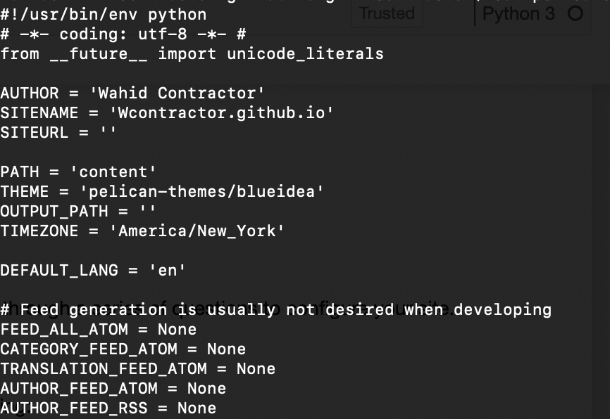

Background
The pages contained within this site are static pages that I have created over the years to catalog my projects and learning adventure. Anyone with a toddler can understand how your priorities shift from personal development projects to changing diapers and cleaning up spit up. Having said that, my daughter is awesome and I love watching her grow up. However, it has been some time since my last post, and I have wanted to get back to this for some time.
This will have a distinctly differnt flavor from the other posts here. In the future I plan on resuming project based posts as I continue to learn about Python, Machine Learning, and Cloud offerrings from the various providers. However,my goal here is to outline the tools and workflow for creating a post and publishing it to this site..
Pelican Overview
Simply stated Pelican is a static website generator. It enables you to quickly get a site up an running as there is no database or server side logic. You can write your code in Markdown and through the support of Jinja templates get something very nice hosted virtually anywhere.
Check out the docs: Pelican 4.2.0
Why Pelican
I chose Pelican for a very simple reason, it's written in Python and I have selected Python for my learning journey. There are other static website generators, another popular one is written in Ruby, called Jekyll.
Installation and Configuration
Assuming you have Python and a package manager installed you'll need to install Pelican.
pip install pelican
Or with the optional Mardown support I highly recommend using Markdown
pip install pelican[Markdown]
Now that you have Pelican installed you can run the pelican-quickstart script. This will walk you through a series of questions to configure your site.
pelican-quickstart
Next, create your local site from the root directory of your project on your local machine by running:
pelican content
If you like you can further fine tune the configurations by editing the configuration found in the root of your site. In here you can tweak settings like pagination, themes, relative URLS, and more.
pelicanconf.py

Finally, create your first post in the content directory:
../yoursite/content/my-first-post.md
The post should have at a minimum the following:
- Title: My Firt Post
- Date: 2021-01-04 14:40
- Category: Pelican
Creating & Previewing Content
To create content quickly you can use any Markdown editor. Since many of my posts are related to Python are Notebooks themselves I am using Jupyter Notebooks saved as .MD files. These get saved to the content folder of my site. You can preview the content locally by running the server.
python -m http.server
This will start the server at http://0.0.0.0:8000